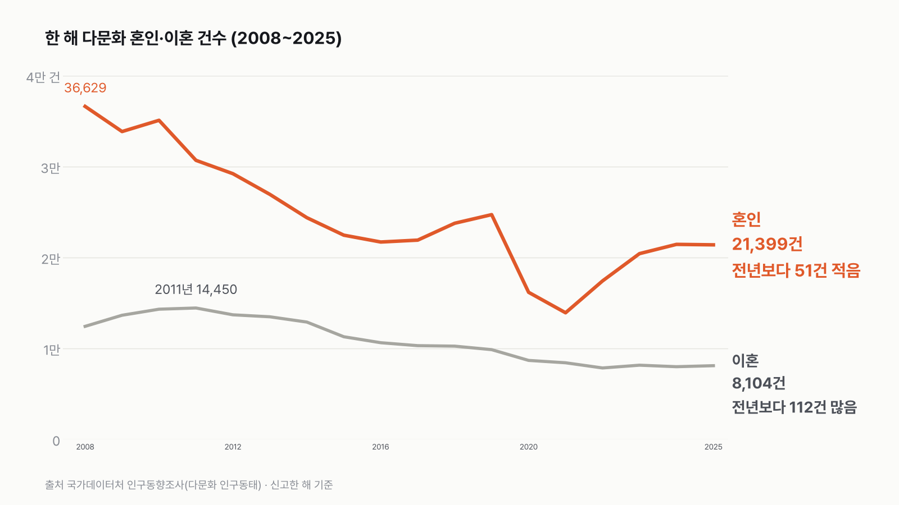
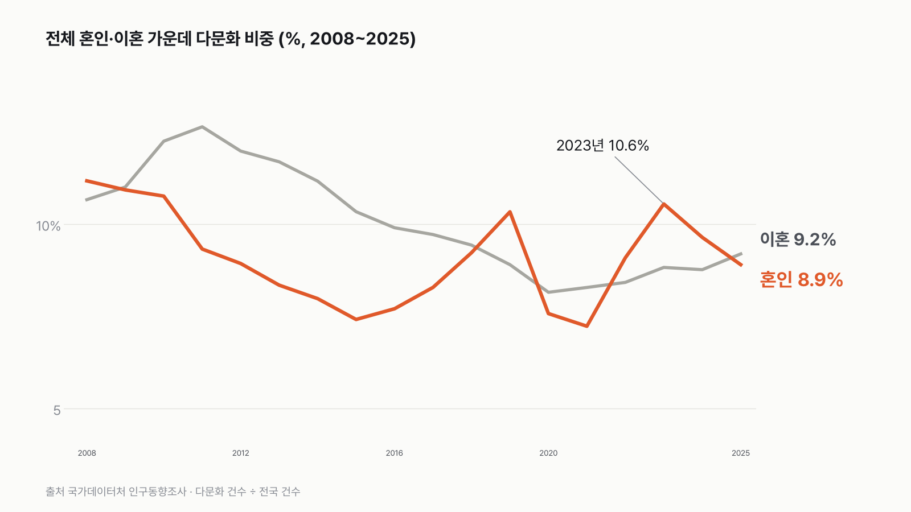

다문화 결혼은 51건 줄고, 이혼은 112건 늘었어요
다문화 결혼은 건수로는 거의 제자리였어요. 전체 결혼이 크게 늘면서 그 안에서 차지하는 비중이 작아졌어요.

- 2025년 다문화 혼인은 2만 1,399건으로, 2024년보다 51건(0.2%) 줄었어요.
- 같은 해 전체 혼인은 8.1% 늘어서, 결혼 가운데 다문화 비중은 9.6%에서 8.9%로 내려왔어요.
- 다문화 이혼은 8,104건으로 112건(1.4%) 늘었어요. 가장 많던 2011년(1만 4,450건)보다는 44% 적어요.
「국내 혼인·출생 늘 때 다문화는 '역주행'」이라는 제목을 보고 표를 열어 봤어요. 기사 숫자는 원자료와 하나도 다르지 않았어요. 다만 '역주행'이라는 말에서 떠오르는 크기와는 좀 달랐어요.
51건. 2만 건이 넘는 결혼에서 빠진 수예요. 같은 해 전체 결혼은 1만 7,914건 늘었어요. 다문화 결혼이 줄어든 건 2021년 이후 4년 만이 맞아요. 그래도 그래프로 보면 멈춰 선 모양에 가까웠어요.
길게 이어 보면 이래요. 다문화 혼인은 2008년 3만 6,629건에서 2021년 1만 3,926건까지 내려갔다가, 2022년부터 3년 동안 늘었어요. 2025년은 그 높이에서 그대로였고, 2016~2017년(2만 1천여 건)과 비슷한 크기예요.
비중으로 바꾸면 그림이 달라져요. 전체 결혼 가운데 다문화는 2023년 10.6%까지 올랐다가 2년 연속 내려왔어요. 2024년엔 다문화 결혼이 5.0% 늘었는데도 비중은 1.0%포인트 떨어졌어요. 전체 결혼이 14.8% 늘었거든요. 분모가 커지면 분자가 그대로여도 비중은 작아져요.


이혼 쪽은 방향이 반대였어요. 전체 이혼은 3.3% 줄었는데 다문화 이혼은 늘었어요. 그래서 전체 이혼 가운데 다문화 비중은 8.8%에서 9.2%로 올라, 2018년(9.4%) 이후 가장 높아요.
긴 흐름은 내리막이었어요. 2012년부터 보면 다문화 이혼이 전년보다 늘어난 해는 2023년(3.9%)과 2025년(1.4%) 두 번뿐이었어요.
사람별로 나눠 보니 늘어난 112건은 아내가 외국 국적인 이혼에 몰려 있었어요. 4,218건에서 4,462건으로 244건 늘었고, 아내가 귀화자인 이혼은 118건 줄었어요. 결혼 쪽 51건도 따라가 봤어요. 아내가 귀화자인 결혼이 174건 줄었고, 아내가 한국 출생인 결혼은 137건 늘었어요.
이 표는 한 해에 몇 쌍이 신고했는지까지만 알려 줘요. 왜 그해에 그만큼이었는지는 여기서 알 수 없었어요.
이 숫자는 어디서 왔나요
출처
어떻게 셌나요
- 다문화 혼인·이혼은 남편이나 아내 가운데 한 사람 이상이 외국 국적자이거나, 귀화·인지로 한국 국적을 얻은 사람인 경우예요.
- 신고한 해 기준이에요. 실제 결혼·이혼한 해와 다를 수 있어요.
- 다문화 비중은 다문화 건수를 같은 해 전국 혼인(또는 이혼) 건수로 나눈 값이에요. 전국 건수에는 국외에서 신고한 건도 들어 있어요.
- KOSIS 표의 유형은 남편, 아내를 사람별로 나눈 구분이에요. 그래서 '남편이 한국 출생, 아내가 외국인' 같은 부부 조합 숫자는 이 표에서 바로 나오지 않아요. 기사에 나온 부부 조합 숫자(외국인 아내 1만 5,287건 등)는 국가데이터처 보도자료 값이에요.
- 확인한 기사: 더파워 「결혼·출산 늘었는데 다문화는 '역주행'…혼인·출생 줄고 이혼 늘어」(2026-11-05). 기사 숫자는 통계청 원자료와 대조했어요.
한계 6가지
이 데이터로 말할 수 없는 것
- 원인은 이 데이터로 알 수 없어요. 다문화 결혼·이혼을 좋다, 나쁘다로 평가하지 않아요.
- 이혼 건수는 그 전 몇 년, 몇십 년 동안 결혼한 부부 수의 영향을 받아요. 같은 해 이혼 건수를 결혼 건수로 나눈 값은 이혼율과 달라요.
- 신고 기준이라 신고가 몰리거나 늦어지면 해마다 숫자가 출렁일 수 있어요. 51건, 112건 같은 작은 변화는 특히 그래요.
- 다문화 출생은 다루지 않았어요(같은 발표에서 1만 3,347명, 0.5% 감소).
- 부부 조합(한국 출생 남편과 외국인 아내 등)별 숫자는 KOSIS 표에 없어 보도자료 값만 인용했어요.
- 전체 이혼의 동거기간·나이는 이혼 글, 결혼이 다시 늘어난 흐름은 출생 반등 글에서 다뤘어요.
새 글 나오면 받아 보기
피드 리더 앱에 이 사이트 주소를 한 번 넣어 두면, 새 글이 올라올 때 앱에 떠요. 가입이나 메일 주소는 필요 없어요.
받는 법 보기
- 피드 리더 앱을 하나 골라요. 새 글을 모아 보여 주는 앱이에요. 예를 들면 Feedly나 Inoreader가 있어요. 둘 다 무료고 웹·휴대폰에서 써요.
- 앱에서 '구독 추가'(+)를 누르고 아래 주소를 붙여 넣어요.
- 끝이에요. 새 글이 올라오면 앱 목록에 떠요.
https://protofu.github.io/opendata-insight/feed.xmlFeedly를 쓴다면 여기를 눌러 바로 추가할 수도 있어요.